Chapter 5
Visualization of fuzzy clustering results
The previous chapter judged a fuzzy partition by validity indices, that is, by single numbers. This chapter projects the data and the cluster prototypes to the plane, so that the analyst can see whether the clusters are compact, whether two of them overlap, or whether a prototype of the wrong shape was fitted. We start with the two classical projections, PCA and Sammon mapping, explain why neither shows a fuzzy clustering faithfully, and derive the fuzzy Sammon mapping (FUZZSAM), which preserves the sample–prototype distances the clustering algorithm worked with rather than the distances between samples; measures of the quality of a projection follow. The fuzzy self-organizing map takes the opposite route: it arranges the prototypes on a grid during clustering, so that the result is a map by construction. All methods are in fuzzyclust.viz.
5.1 Problem and idea
Clustering algorithms always fit their prototypes to the data, whether or not the assumed cluster structure is adequate. In two dimensions the analyst sees at once whether a spherical prototype was forced onto an elongated group or two groups were merged. In a typical data mining problem the data have tens of attributes, the clusters are high-dimensional geometric objects, and this inspection is impossible. Validity indices (chapter 4) compress the partition into a scalar; they are indispensable for ranking candidate partitions, but the compression loses the information on where and why a partition is poor.
A low-dimensional picture of the clustering is therefore a tool in its own right [49, 50, 51]. Two classical projection methods are at hand. Principal component analysis (PCA) is a linear projection onto the plane of largest variance; Sammon’s nonlinear mapping [52] places points in the plane so that their mutual Euclidean distances reproduce the distances of the original samples. Both methods project the data. A fuzzy clustering, however, is not defined by the distances between samples: it is defined by the distances between the samples and the prototypes, measured with the norm of the algorithm (Euclidean for FCM, the adaptive norm of Gustafson–Kessel, the exponential distance of Gath–Geva, the distance to a line or a shell for the variants of chapter 6), and by the memberships derived from them. Two consequences follow:
- a projection of the data cannot represent a clustering that uses a non-Euclidean distance; a Gustafson–Kessel ellipsoid appears as an ellipsoid in the PCA plane, although the algorithm “sees” it as a sphere in its own norm, and the prototype of a line or shell cluster has no natural position in the picture at all;
- the pairwise distances of Sammon mapping make every iteration quadratic in , while the clustering itself needs only distances per iteration.
The fuzzy Sammon mapping resolves both problems with one idea (fig. 5.1): it looks for projected samples () and projected centers such that the Euclidean distances in the plane reproduce the distances of the clustering algorithm, each pair weighted by . Every cluster becomes a single point in the plane regardless of the shape of its prototype, the memberships can be recomputed from the picture with the FCM formula, and the agreement between recomputed and fitted memberships tells how faithful the picture is. The fuzzy self-organizing map, finally, does not project an existing partition but constrains the prototypes to a grid while clustering; the grid is the picture.
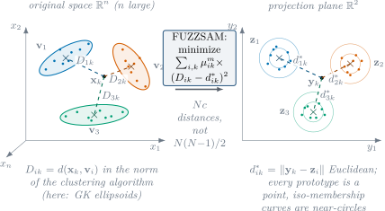
5.2 Theory
Throughout the chapter is the data matrix, the prototypes, the fuzzy partition, and the (not squared) distance of the clustering algorithm; in the code is stored transposed as membership_ of shape (n_samples, n_clusters) and is returned by transform. The projection has dimension (two in all pictures); denotes the projected sample and the projected prototype. We first review the two classical data projections (sections 5.2.1 and 5.2.2), then derive FUZZSAM (section 5.2.3) and the measures of projection quality (section 5.2.4), and finally present the fuzzy self-organizing map (section 5.2.5).
5.2.1 Principal component projection
PCA [53] projects the centered data onto the eigenvectors of the covariance matrix
|
| (5.1) |
belonging to the largest eigenvalues. The plane captures the largest possible share of the total variance, and the ratio of the retained eigenvalues to their sum tells how large this share is. Because the map is affine, the prototypes are projected with the same formula, ; for Euclidean prototypes (FCM) the coincide with the membership-weighted means of the projected data. PCA is fast, deterministic, and applicable to new samples, but it preserves variance, not distances: clusters that differ in low-variance directions fall on top of each other, and nothing in the picture refers to the norm of the clustering algorithm.
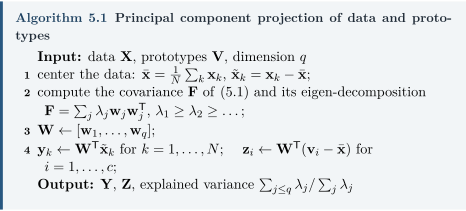
In a nutshell: PCA projection
- Linear, variance-preserving projection onto the plane of the first two principal components.
- Prototypes are mapped with the same affine transform, so data and centers stay consistent.
- Deterministic, cheap, extendable to new data; the natural starting point of the nonlinear methods.
- Ignores distances and the algorithm’s norm; compact high-dimensional clusters may overlap in the plane.
5.2.2 Sammon mapping
Sammon’s mapping [52] is a multidimensional scaling method. It looks for points whose pairwise distances approximate the pairwise distances of the original data by minimizing the stress
|
| (5.2) |
The division by gives small distances a larger weight than a plain least-squares fit would, so that the local structure is preserved; the constant only normalizes and does not change the optimum. means that every distance is reproduced exactly. The minimization in the coordinates is carried out by Sammon’s diagonal Newton step with step size (“magic factor”) ,
|
| (5.3) |
with
Sammon recommended –. The denominator in (5.3) is a curvature along one coordinate and can be arbitrarily small for single points, in which case the step throws them far away; fuzzyclust therefore clips outlying displacements and halves the step when the stress would increase, which in practice keeps the stress history monotone (the raw update is available with backtracking=False). The stress surface has local minima, so the initial configuration matters: random starts give different maps, whereas the principal component scores give a deterministic and usually good start [54]. Two properties limit the method for clustering: every iteration needs all distances, which becomes impractical for large [55], and there is no out-of-sample extension—a new point requires a new optimization [56]. Prototypes are not part of the mapping; for Euclidean clusterings they can be placed at the weighted means of the projected data afterward.
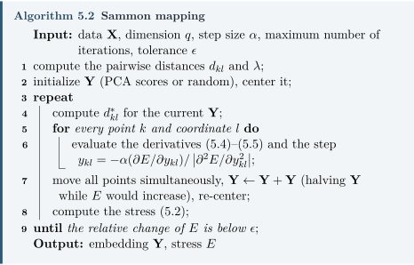
In a nutshell: Sammon mapping
- Nonlinear projection that preserves the pairwise Euclidean distances of the samples; small distances weigh more.
- Iterative diagonal Newton descent of the stress ; step size –, initialize from PCA.
- Cost quadratic in per iteration; local minima; no mapping of new samples.
- Shows the geometry of the data; knows nothing about the prototypes or the norm of the clustering algorithm.
5.2.3 Fuzzy Sammon mapping (FUZZSAM)
A fuzzy clustering algorithm minimizes : only the distances between samples and prototypes matter, and each of them matters in proportion to the membership. The fuzzy Sammon mapping [49, 50, 51] carries this structure over to the projection. It looks for projected samples and projected centers such that
|
| (5.6) |
is minimal, where is the distance of the clustering algorithm. Three things change with respect to (5.2). First, only distances enter, so an iteration costs instead of . Second, the norm of the algorithm is built in: a Gustafson–Kessel cluster, whose points are all at a small Mahalanobis-type distance from the prototype, is mapped to a compact round group around , whatever its orientation and elongation in ; a line or shell prototype becomes an ordinary point. Third, the weights make the map accurate where it matters: the distance of a sample to a cluster it hardly belongs to need not be reproduced. The derivatives of (5.6) with respect to the coordinates of , with the held fixed, are the analogs of (5.4)–(5.5):
and the points are moved by the same diagonal Newton step (5.3). After every sweep the projected centers are recomputed as the weighted means of the projected data, in analogy with the prototype update of the clustering algorithms,
|
| (5.9) |
The first version of the method [49] weighted with instead of in (5.6) and (5.9); the later papers and fuzzyclust use (parameter weight_exponent selects either). The initial configuration is the PCA projection of the data, or, as in the original case studies, a classical Sammon map; from it the follow by (5.9).
In the plane every cluster is represented by a point and the distances are Euclidean, so the picture can be read with the FCM membership formula: the memberships implied by the picture are
|
| (5.10) |
and their level curves , drawn over the plane, are the contours of fig. 5.1. For two clusters they are exact circles (each level set of is an Apollonius circle); for more clusters they are close to circles near a projected center and deform where the regions of neighboring clusters meet. If the prototype suits the data, the projected cluster is a compact group inside its contours; a cluster that spills across the contours, or two clusters whose contours interpenetrate, point to an inadequate prototype or a wrong number of clusters. A smaller fuzziness exponent is visible too: the partition is crisper and the contours of high membership enclose more points.
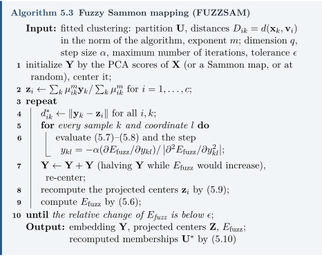
In a nutshell: Fuzzy Sammon mapping
- Projects a fitted fuzzy clustering: preserves the sample–prototype distances of the algorithm, weighted by .
- Works with any prototype and norm (FCM, GK, GG, lines, shells); every cluster becomes a point with nearly circular membership contours.
- per iteration; same Newton step as Sammon (); centers recomputed as weighted means after every sweep.
- Distorted or overlapping groups in the plane indicate a wrong prototype or a wrong number of clusters; the recomputed memberships quantify the fidelity.
5.2.4 Quality of a projection
Any two-dimensional picture is an approximation. For a projection of a fuzzy clustering the natural question is whether the memberships a viewer reads off the picture agree with the fitted ones. With the recomputed partition of (5.10), evaluated for the projected data and centers of whatever method produced them, the FUZZSAM papers use three numbers:
the mean absolute membership error and the partition coefficients [3] of the fitted and of the recomputed partition. means that the picture shows exactly the fitted partition; means that the picture looks much crisper than the clustering really is (the typical failure of PCA, which pushes the samples apart from the wrong centers). The Sammon stress of (5.2), evaluated for the embedding against the Euclidean distances of the data, completes the set; it measures how well the geometry of the data is kept, which is a different goal. In the published case studies FUZZSAM has by far the smallest and an closest to , while classical Sammon mapping has the smallest —each method is best at what it optimizes. Other validity indices computed from and can be compared in the same way.
5.2.5 Fuzzy self-organizing map
The methods so far project a finished clustering. Kohonen’s self-organizing map [57] takes the opposite route: the prototypes (code vectors) sit on the nodes of a regular low-dimensional grid and are trained so that neighboring nodes hold similar prototypes; the grid thus becomes a topology-preserving map of the data. The classical SOM is a heuristic competitive-learning rule with a shrinking neighborhood and no objective function; several authors have therefore reformulated it as a modification of fuzzy c-means [58, 59]. Abonyi, Migály, and Szeifert [60] add a smoothness penalty to the FCM functional:
with , where is the position of a node on the -dimensional grid (: a chain, : a sheet) and with stacks the second-order finite difference operators along the grid axes: for every interior node of axis the row of reads (fig. 5.2). The penalty is thus the sum of the squared discrete curvatures of the map; an affine (planar, regularly spaced) grid is not penalized at all, so the penalty orders the prototypes without pulling them together. Replacing the second-order by first-order differences gives the “smoothly distributed FCM” of [59], which penalizes the edge lengths and therefore contracts the map toward the data center; the fuzzy curve-tracing algorithm of [61] is the special case of a chain with second-order differences. For plain FCM with unordered prototypes is recovered.
The membership update is that of FCM, since the penalty does not involve . For fixed the prototypes are coupled through ; setting the gradient of (5.13) to zero gives the linear system
where denotes the element-wise power of the partition matrix. The system has a unique solution because the left matrix is the sum of a positive diagonal and a positive semidefinite matrix. fuzzyclust solves it exactly in every iteration; the original paper iterates its row-wise form , whose fixed point is the same. The alternating optimization of the base class (chapter 2) therefore applies unchanged with a modified prototype step. The prototypes are initialized on a regular grid in the subspace of the first principal components, which already gives an ordered start; the regularization then keeps the order while the map folds into the data.
Once fitted, the map is read like a SOM. The U-matrix shows for every node the mean distance of its prototype to the prototypes of its grid neighbors: ridges of large distance separate groups of similar prototypes, i.e. clusters of the data. A component plane shows one coordinate of the prototypes over the grid and reveals which variables drive the organization. The fuzzy hit histogram shows where the data (or a subset, e.g. one class) fall on the map. A smaller exponent sharpens these views when many prototypes are fitted in high dimension, where the FCM memberships for tend to become uniform.
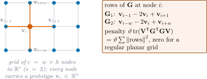
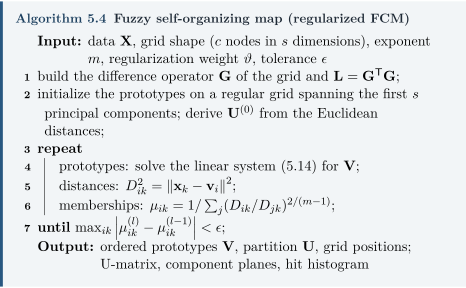
In a nutshell: Fuzzy self-organizing map
- FCM whose prototypes live on a grid and are coupled by a curvature penalty ; an exact objective is minimized by alternating optimization.
- : plain FCM, unordered; moderate : ordered, topology-preserving map; very large : flat grid that ignores the curvature of the data.
- Second-order differences (default) order without contracting; first-order differences shrink the map toward the data center.
- Read the result like a SOM: U-matrix, component planes, hit histograms; use a smaller for many nodes in high dimension.
5.3 Using it in fuzzyclust
All methods live in fuzzyclust.viz. FUZZSAM accepts any fitted fuzzyclust clusterer and obtains the distances in the norm of the algorithm from the transform method of the clusterer.
fuzzyclust.viz.pca_projection(X, n_components=2, centers=None)
Returns (Y, Z, pca): the projected data, the projected prototypes (or None) and the fitted sklearn.decomposition.PCA object (explained_variance_ratio_, transform for further data).
fuzzyclust.viz.Sammon
n_components=2, max_iter=100, alpha=0.3, init="pca", tol=1e-6,
backtracking=True, max_backtracks=10, random_state=None.
fit(X), fit_transform(X); attributes embedding_, stress_, stress_history_,
n_iter_. init may also be an array (e.g. a previous embedding). transform
raises NotImplementedError: Sammon mapping has no out-of-sample
extension. The function sammon_stress(X, Y) evaluates (5.2) for any
embedding.
fuzzyclust.viz.FuzzySammon
n_components=2, max_iter=100, alpha=0.4, init="pca", tol=1e-6,
backtracking=True, max_backtracks=10, m=None, weight_exponent=None,
random_state=None.
fit(estimator, X) takes a fitted clusterer and the data (memberships
and distances are re-evaluated on X, so any data the estimator can score
may be mapped); alternatively fit(membership=U, distances=D) with
explicit arrays. Attributes embedding_, embedded_centers_, stress_,
stress_history_, n_iter_, membership_, distances_, m_ (the exponent used);
methods recomputed_membership() and quality(X=None) returning
,
,
(and
). m=None
takes the exponent of the estimator (2.0 if it has none); weight_exponent=1.0 selects
the -weighted
first variant.
fuzzyclust.viz.recomputed_membership(Y, Z, m=2.0) / projection_quality( U, Y, Z, m=2.0, X=None)
(5.10) and the dictionary {"P", "F", "F_star", "E"} of (5.11)–(5.12); E is included when X is given. Works for any projection, so PCA, Sammon, and FUZZSAM maps are compared on the same footing.
fuzzyclust.viz.FuzzySOM
grid_shape=(5, 5), m=2.0, regularization=1.0, difference_order=2,
tol=1e-4, max_iter=300, init="pca", n_init=1, random_state=None,
verbose=0.
A BaseFuzzyClusterer: fit, predict, predict_proba, transform,
cluster_centers_, membership_, labels_, objective_history_; the number
of nodes is n_clusters_ = prod(grid_shape). Map views: grid_positions_,
regularization_matrix_, u_matrix(), component_planes(), hits(X=None),
neighbor_distance(). grid_laplacian(grid_shape, order=2) returns
and
the node positions without fitting a map.
plot helpers: plot_projection, plot_stress, plot_map, plot_som_lattice
plot_projection(Y, Z, labels, U, contours=True, m, levels, misclassified, label_prefix) draws the embedding with the projected centers and the level curves of ; plot_stress the stress histories; plot_map(som, kind="umatrix"| "component"|"hits", feature, X) a fuzzy SOM as a colored grid; plot_som_lattice(som, X, dims) the prototypes in the data space with grid neighbors connected. All four take ax=None and return the Axes.
A typical session projects a Gustafson–Kessel result with PCA and FUZZSAM and compares the two pictures by their quality measures:
Y_pca, Z_pca, _ = pca_projection(X, 2, centers=gk.cluster_centers_) fsam_fcm = FuzzySammon(n_components=2, max_iter=100, alpha=0.4, init="pca").fit(fcm, X) fsam_gk = FuzzySammon(n_components=2, max_iter=100, alpha=0.4, init="pca").fit(gk, X) quality_pca = projection_quality(gk.membership_, Y_pca, Z_pca, m=gk.m, X=X) quality_gk = fsam_gk.quality(X)
and reproduces the three-way comparison of the papers on the wine data:
Y_pca, Z_pca, _ = pca_projection(Xw, 2, centers=fcm_w.cluster_centers_) sammon = Sammon(max_iter=100, alpha=0.4, init=Y_pca).fit(Xw) Um = fcm_w.membership_**2 Z_sam = (Um.T @ sammon.embedding_) / Um.sum(axis=0)[:, None] fsam_w = FuzzySammon(max_iter=100, alpha=0.4, init=sammon.embedding_).fit(fcm_w, Xw) rows = { "PCA": projection_quality(fcm_w.membership_, Y_pca, Z_pca, m=2.0, X=Xw), "Sammon": projection_quality(fcm_w.membership_, sammon.embedding_, Z_sam, m=2.0, X=Xw), "FUZZSAM": fsam_w.quality(Xw), } table = pd.DataFrame(rows).T.rename(columns={"F_star": "F*"})
A fuzzy self-organizing map is fitted like any other clusterer:
maps = {th: FuzzySOM(grid_shape=(6, 6), regularization=th, random_state=0).fit(Xh) for th in (0.0, 0.5, 5.0)}
5.4 Examples
5.4.1 PCA versus Sammon mapping
Five Gaussian clusters in five dimensions are projected by PCA and by Sammon mapping started from the PCA scores (fig. 5.3). The PCA plane keeps 76 % of the variance but its stress is twice that of the Sammon map; the groups that overlap in the PCA picture are separated once the distances rather than the variance are preserved. Figure 5.4 shows the convergence of the stress for several step sizes and for random initial configurations: a larger converges in fewer iterations, and random starts need many more iterations than the PCA start and end in different local minima of comparable stress.
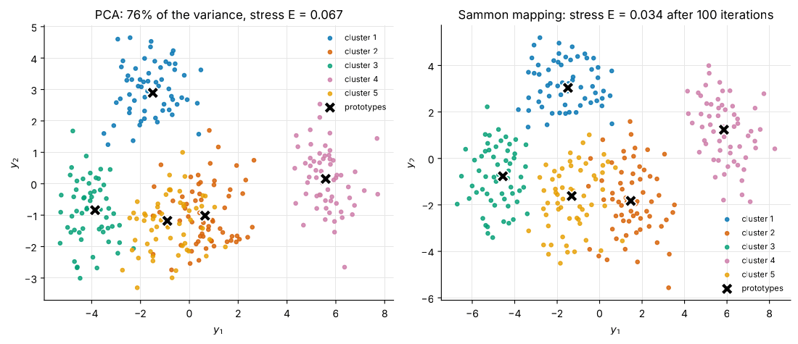
Open in ColabExample plot_01_pca_vs_sammon.py in the gallery
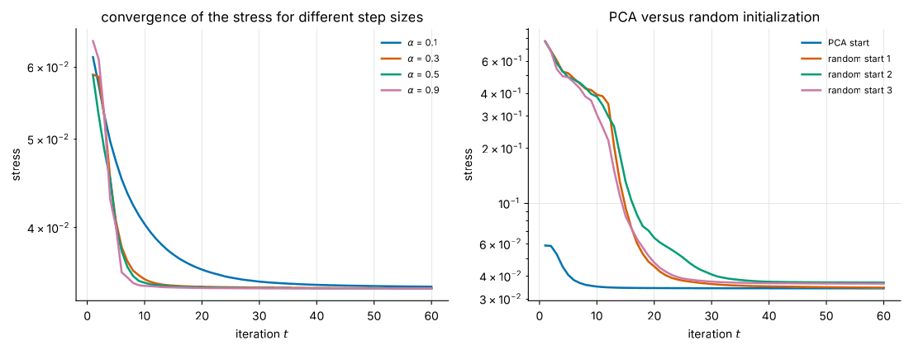
5.4.2 Fuzzy Sammon mapping
Figure 5.5 illustrates the central property of FUZZSAM on three elongated Gaussian clusters in four dimensions. In the PCA picture of the Gustafson–Kessel result the memberships recomputed in the plane disagree with the fitted ones (). FUZZSAM of the FCM result reproduces its memberships closely (), but the groups spill into each other’s contours, because the spherical prototype does not fit these data. FUZZSAM of the GK result shows three separated groups with round contours, since the GK norm already sees the ellipsoids as spheres and the picture inherits this view; the tails of the groups reach into the neighboring contours, so its is higher than that of FCM. The distortion of a FUZZSAM picture is thus a diagnostic of the prototype.
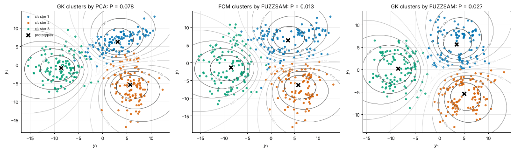
Figure 5.6 repeats the comparison of the papers on the wine data (178 wines, 13 range-scaled attributes, FCM with ). Table 5.1 lists the quality measures: drops from (PCA) through (Sammon) to (FUZZSAM), and the partition coefficient read off the FUZZSAM picture () is close to the fitted one (), whereas PCA suggests a far crisper partition (). The Sammon stress ranks the methods differently: classical Sammon mapping is best at preserving the data geometry, FUZZSAM at preserving the clustering. The circled samples are wines whose cluster does not match their cultivar (5 % of the data); they lie in the fuzzy region between the centers in every picture, but only the FUZZSAM picture places them where their memberships say.
| PCA | 0.130 | 0.503 | 0.742 | 0.130 |
| Sammon | 0.087 | 0.503 | 0.656 | 0.057 |
| FUZZSAM | 0.036 | 0.503 | 0.522 | 0.096 |
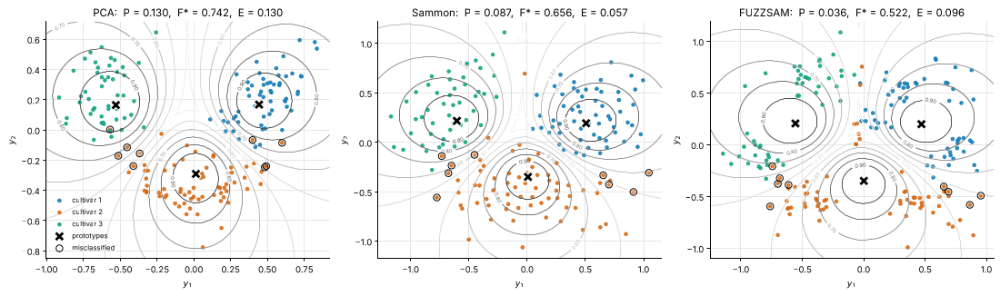
The fuzziness of a partition is visible as well. Figure 5.7 shows the GK clustering of the iris data for and , drawn with the same membership levels: with the smaller exponent the partition is crisper ( against ), and the curves of high membership expand and enclose almost all points of each cluster.
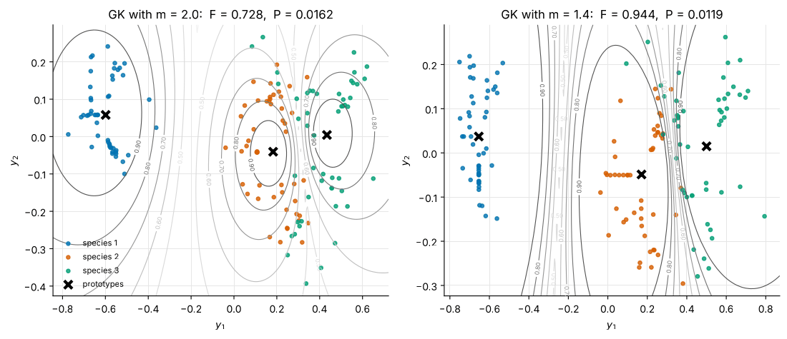
5.4.3 Fuzzy self-organizing map
The two geometric case studies of [60] are reproduced. In fig. 5.8 seven prototypes on a one-dimensional grid are fitted to 300 noisy points on one turn of a helix. Plain FCM () finds seven groups along the curve, but the chain connecting consecutive nodes is tangled; with the chain follows the curve. Figure 5.9 fits a grid to 900 points on a hemisphere: without regularization the lattice is a tangle of crossing edges; with it is a regular net folded onto the surface, as the component plane of the third coordinate in fig. 5.10 confirms; and with the net is nearly planar and no longer follows the curvature. The Spearman correlation between grid distances and prototype distances, printed in the panel titles, rises from for to for and for , while the objective grows from to and . Figure 5.11 compares the two difference operators: with first-order differences the extent of the map shrinks with and collapses to a point for ; with second-order differences it stays constant, which is the argument for the curvature penalty.
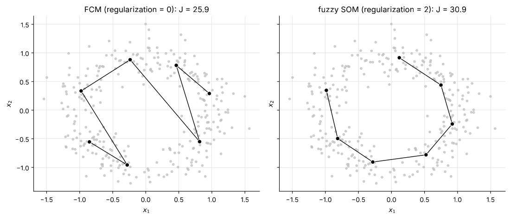
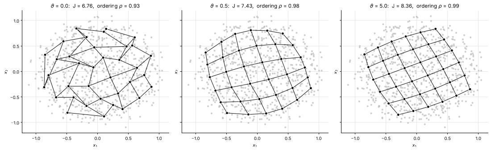
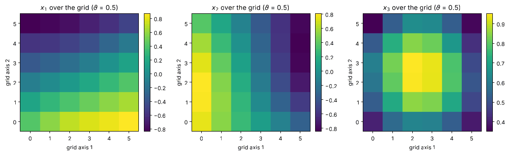
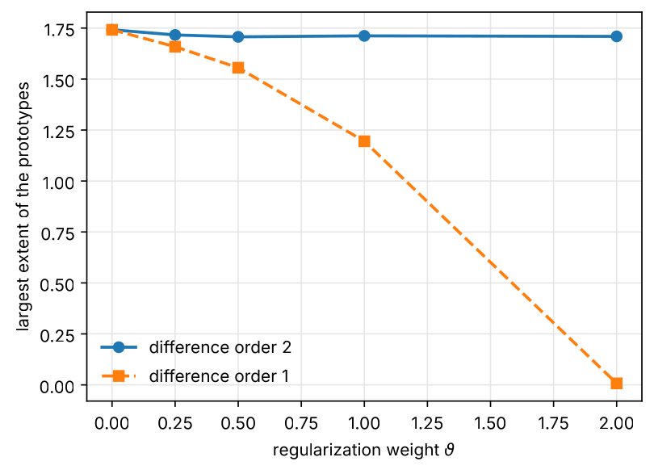
Figures 5.12 and 5.13 show a map of the standardized wine data (, ). The U-matrix has dark ridges that divide the grid into three regions, the hit histograms of the three cultivars fall into exactly these regions, and the component planes of the flavanoid content and the color intensity show the chemistry behind the split.
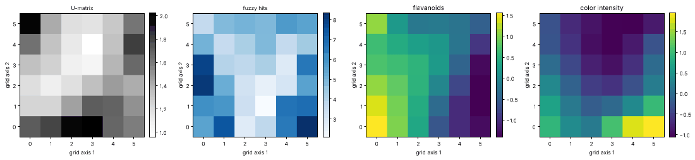
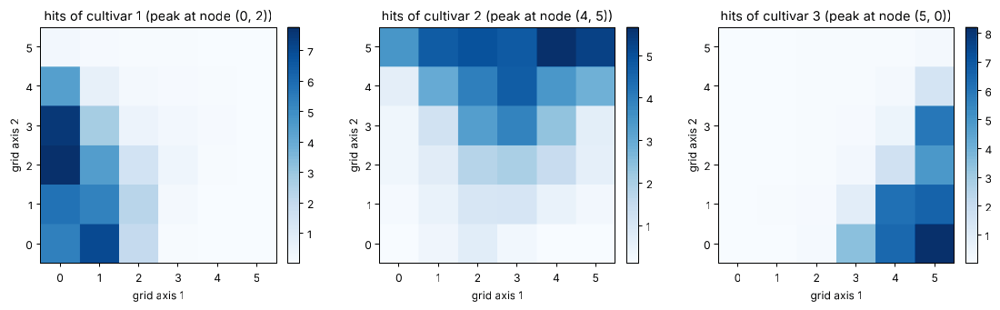
5.4.4 Visual validation of the number of clusters
Figure 5.14 applies FUZZSAM to the FCM partitions of the Wisconsin breast cancer data (569 samples, ten standardized features) for . With two clusters the groups are compact and the diagnosis coincides with the clusters up to a band of ambiguous cases between the centers; with three clusters the extra prototype splits the large benign group, and with four the malignant group is split as well; the new clusters overlap in the plane, and the recomputed memberships fit worse ( grows from to ). The validity indices PC, CE, and XB also favor two clusters (SC, which decreases with by design, does not), but only the picture shows which clusters were split and where the ambiguous samples lie. Figure 5.15 shows the convergence of for several step sizes; because only distances enter, sixty iterations on 569 samples take a fraction of a second.
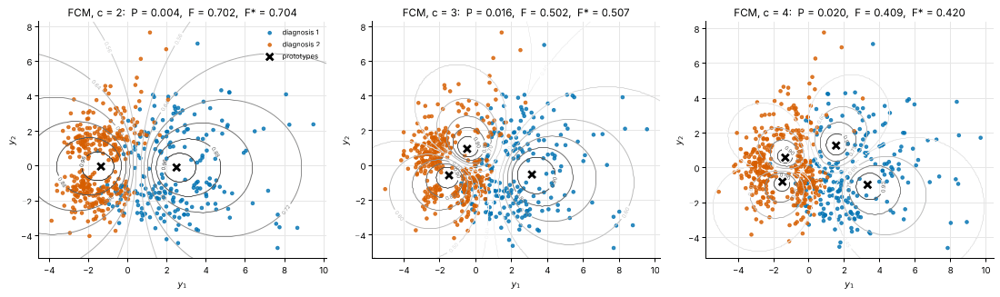
Open in ColabExample plot_04_cluster_number_validation.py in the gallery
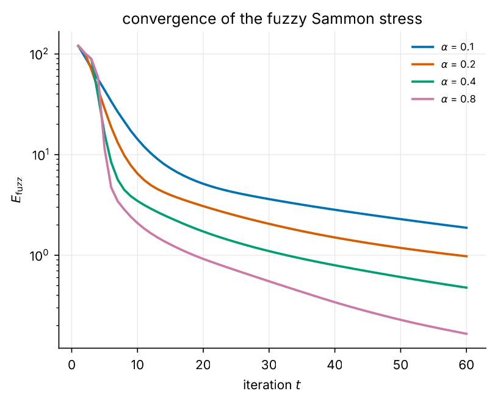
5.5 Further reading
Sammon’s original paper [52] remains the clearest account of the stress and of the diagonal Newton step; Mao and Jain [54] and de Ridder and Duin [55] discuss initialization, neural-network implementations, and the computational burden, Pal and Eluri [56] the missing out-of-sample extension. The fuzzy Sammon mapping was introduced by Kovács and Abonyi [49], presented with the Gustafson–Kessel examples and the quality measures by Abonyi and Babuška [50], and applied to the visualization of reconstructed phase-space trajectories of chaotic systems by Feil, Balaskó, and Abonyi [51], where the prototypes are local linear models and no classical projection would apply. For PCA see Jolliffe [53]; the partition coefficient used in and is Bezdek’s [3]. The self-organizing map is Kohonen’s [57]; its fuzzy reformulations include the fuzzy Kohonen clustering network [58], the smoothly distributed fuzzy c-means [59] and the fuzzy curve-tracing algorithm [61]; the last two are special cases of the regularized FCM of Abonyi, Migály, and Szeifert [60], obtained by the choice of . The SOM Toolbox [62] is the reference implementation of the U-matrix and component-plane views.